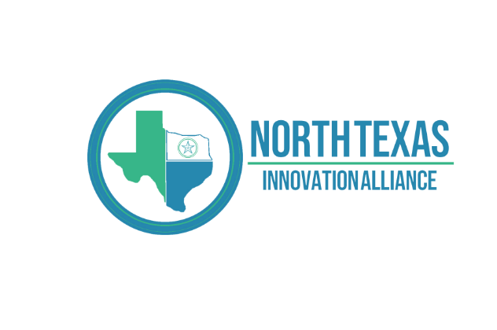
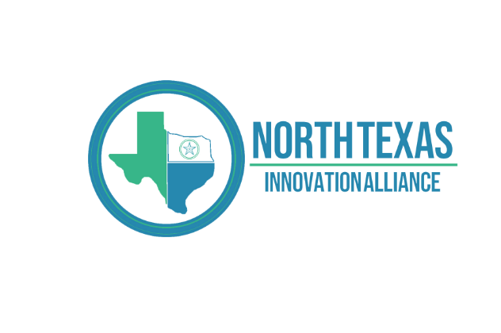

Aging infrastructure, rapidly increasing population, frequency of extreme weather events and unintended shocks to systems
including water, food, air quality and public health. How is the North Texas region preparing for the future proactively with an
eye toward resource conservation, sustainable and resilient infrastructure and emergency response? Some examples below
as a start.
North Texas Innovation Alliance Lead Partners
DFW Airport - Athena Project: Using data-driven statistical modeling and artificial intelligence,
Athena is helping transportation hubs integrate and adapt to transformative technologies that
support ambitious energy goals. Funded by the U.S. Department of Energy (DOE) Vehicle
Technologies Office, Athena is a collaborative effort led by the National Renewable Energy
Laboratory (NREL) in partnership with Oak Ridge National Laboratory (ORNL), and industry. Athena
researchers have developed sophisticated models of current and future mobility requirements,
including a "digital twin" model of DFW Airport to simulate the impacts of future capacity
expansion scenarios. Athena insight will help inform realistic recommendations for long-term
investments at DFW airport and other transportation hubs over the next 20 years. The primary
Athena research team includes NREL, ORNL, DFW Airport, the North Texas Council of Governments,
and the DFW Airport Clean Cities Coalition. Regional stakeholders and data providers include
American Airlines, Hitachi, Toyota, the Federal Aviation Administration, and NASA.
Dallas County - Records Building: For the future of Dallas County and the representation of all its
citizens, we are reviving the Dallas County Records Building Complex by renewing each of its
three historic buildings. The Complex will prove a unique intersection of the old and the new and
a simultaneous encapsulation of the past, present and future of Dallas County. With ambitious
targets for sustainability, wellness and construction innovation, the Records Building is one of the
first WELL Certified government projects in Texas. Dallas County is pioneering a new type
of workplace that emphasizes wellbeing and encourages a healthy lifestyle.
North Texas - The Regional Integration of Sustainability Efforts (RISE) Coalition: RISE works to
engage local governments in peer-exchange opportunities to support sustainability and
environmental initiatives. In partnership with the Regional Integration of Sustainability Efforts
(RISE) Coalition, and with the generous contribution from Burlington-Northern Santa Fe (BNSF)
railroad, NCTCOG is providing cities in the North Central Texas 12-county Metropolitan Planning
Area access to the Local Governments for Sustainability (ICLEI), formally known as the
International Council for Local Environmental Initiatives, ClearPath software tool at no cost.
Participating cities are leveraging ClearPath to produce their own city-wide Greenhouse Gas
inventories, with ICLEI and NCTCOG support.
Dallas - Southwestern Medical District : An exceptional convergence of health, wellness, safety,
nature and connection. In other words, a true community. Elements include: 23 acres of streets
reclaimed for pedestrian use, including wider sidewalks, shared-use paths, park space and
sidewalk cafés; 6,500 trees planted within the public realm; 21 miles of sidewalk added to the
existing 12 miles of sidewalk along streets 73% of streets with a 6’ or greater pedestrian buffer – a
safer and more comfortable walking environment; 80% (16.8 miles) of streets that support
integrated bicycle infrastructure; and 1.2 million cubic feet of rain captured and treated by rain
gardens
North Texas-North Texas Food Policy Alliance (NTFPA): The NTFPA, founded in 2020, envisions a
North Texas with a sustainable and equitable food system that will end hunger and ensure health
and well-being for all, with the mission to foster regional collaboration to develop sustainable
and equitable food systems in North Texas.